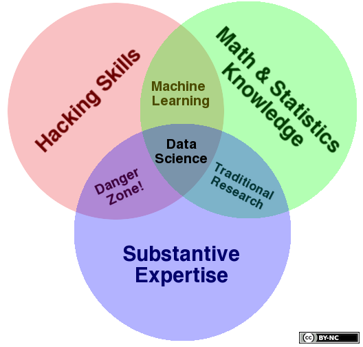
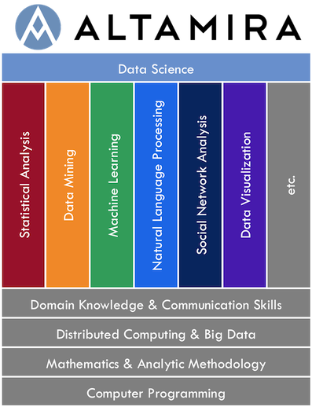

<div id="blog" class="container">
  <div class="post">
	<h1 class="title">What is Data Science?</h1>
	<div class="meta row">
    <div class="byline col-md-6">
      27 Mar 2014, written by Charlie Greenbacker
    </div>
    <div class="share col-md-6">
      <a href="https://twitter.com/share" class="twitter-share-button" data-via="oss4ds">Tweet</a>
      <script>!function(d,s,id){var js,fjs=d.getElementsByTagName(s)[0],p=/^http:/.test(d.location)?'http':'https';if(!d.getElementById(id)){js=d.createElement(s);js.id=id;js.src=p+'://platform.twitter.com/widgets.js';fjs.parentNode.insertBefore(js,fjs);}}(document, 'script', 'twitter-wjs');</script>
    </div>
  </div>
	  <div class="post-content">
		  <p>Anytime you talk about "<strong>data science</strong>," it's first necessary to define the term. Here are few good ones we've found over the years...</p>
		  <br />
		  <blockquote class="twitter-tweet" lang="en"><p>Data Scientist (n.): Person who is better at statistics than any software engineer and better at software engineering than any statistician.</p>&mdash; Josh Wills (@josh_wills) <a href="https://twitter.com/josh_wills/statuses/198093512149958656">May 3, 2012</a></blockquote>
<script async src="//platform.twitter.com/widgets.js" charset="utf-8"></script>
		<br />
		<blockquote class="twitter-tweet" lang="en"><p>&quot;Data Scientist&quot; is a Data Analyst who lives in California.</p>&mdash; Zvi (@nivertech) <a href="https://twitter.com/nivertech/statuses/180109930139893761">March 15, 2012</a></blockquote>
<script async src="//platform.twitter.com/widgets.js" charset="utf-8"></script>
		<br />
		<blockquote class="twitter-tweet" lang="en"><p>Data Science is statistics on a Mac.</p>&mdash; Big Data Borat (@BigDataBorat) <a href="https://twitter.com/BigDataBorat/statuses/372350993255518208">August 27, 2013</a></blockquote>
<script async src="//platform.twitter.com/widgets.js" charset="utf-8"></script>
		<br />
		<p>Then there's <strong>Drew Conway's</strong> famous <a href="http://drewconway.com/zia/2013/3/26/the-data-science-venn-diagram">Data Science Venn Diagram</a>:</p>
		<a href="http://drewconway.com/zia/2013/3/26/the-data-science-venn-diagram"></a>
		<br /><br />
		<p>Another good definition is this one by <strong>Paul Cooper</strong> from <a href="http://www.itproportal.com/2014/02/11/how-to-pick-a-data-scientist-the-right-way/
">ITProPortal.com</a>:</p>
		<blockquote>"A data scientist is someone who understands the domains of programming, machine learning, data mining, statistics, and hacking"</blockquote>
		<br />
		<p>Here's how we define Data Science at <strong>Altamira</strong>:</p>
		
		<br /><br />
		<p>The bottom four rows are the <strong>table stakes</strong> - the cost of admission just to play the game. These are foundational skills that all aspiring data scientists must obtain. Every data scientist must be a <strong>competent programmer</strong>. He or she must also have a solid grasp of math, statistics, and <strong>analytic methodology</strong>. Data science and "<strong>big data</strong>" go hand-in-hand, so all data scientists need to be familiar with frameworks for distributed computing. Finally, data scientists must have a basic understanding of the domains in which they operate, as well as excellent communications skills and the ability to tell a good <strong>story with data</strong>.</p>
		<p>With these basics covered, the next step is to develop <strong>deep expertise</strong> in one or more of the vertical areas. "Data Science" is really an umbrella term for a collection of interrelated techniques and approaches taken from a variety of disciplines, including mathematics, statistics, computer science, and software engineering. The goal of these diverse methods is to <strong>extract actionable intelligence</strong> from data of all kinds, enabling clients to make better <strong>data-driven decisions</strong>. No one person can ever possibly master all aspects of data science; doing so would require multiple lifetimes of training and experience. The best data scientists are therefore "<strong>T-shaped</strong>" individuals - that is, they possess a breadth of knowledge across all areas of data science, along with deep expertise in at least one. Accordingly, the best <strong>data science teams</strong> bring together a set of individuals with complementary skillsets spanning the <strong>entire spectrum</strong>.</p>
	  </div>
  </div>
</div>
